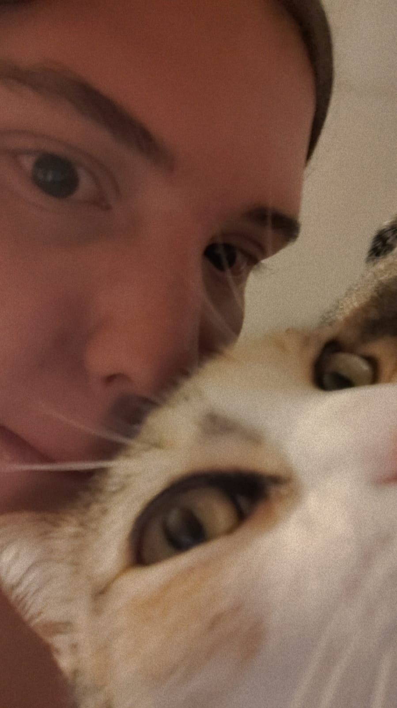
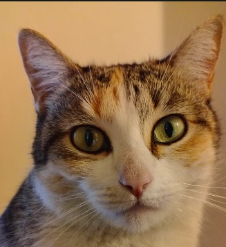
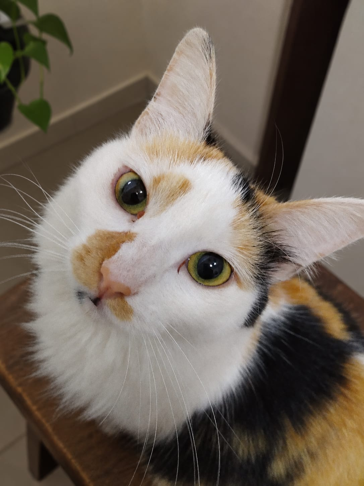
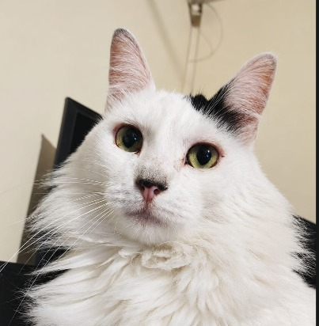
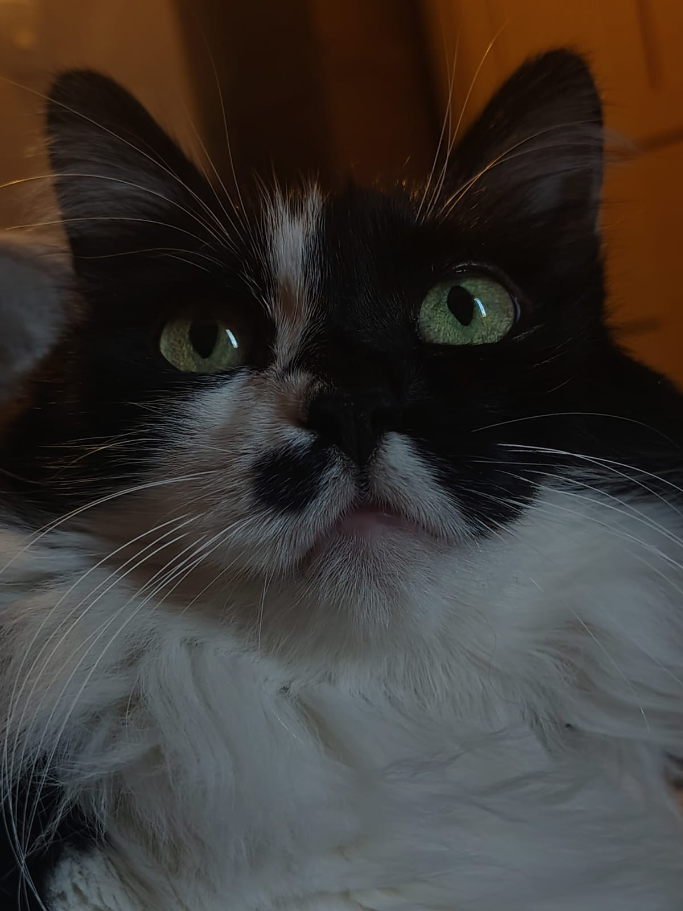
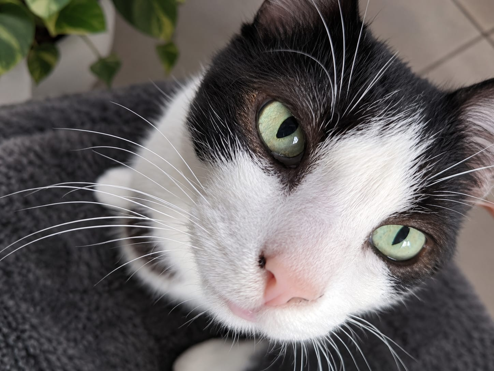

Este é o meu cantinho na internet: aqui você conhece a minha história com eles e, em breve, acompanhará o diário dos seus gatos.
Conheça meus gatos Criar conta
Meu nome é Bella, tenho 19 anos e estudo Ciência da Computação na SPTech School. Sou apaixonada por tecnologia e por gatos, e este projeto junta as duas coisas.
Os gatos entraram na minha vida quando [conte como foi: o primeiro gato, um resgate, um presente]. De lá para cá, a casa só foi ficando mais cheia e mais divertida.
Cinco personalidades diferentes debaixo do mesmo teto.

Idade: 7 anos
Humor: encrenqueira, energia pura, inteligente

Idade: 8 anos
Humor: delicada, princesinha, carente por atenção

Idade: 8 anos
Humor: falante, reclamão, fofo

Idade: 9 anos
Humor: matriarca, tranquila, brava

Idade: 8 anos
Humor: carente, tranquilo, bonzinho
Eles fazem o meu dia totalmente mais leve, é um cuidado muito grande que eu sinto tanto da minha parte com eles, quanto deles comigo, mesmo sendo seres irracionais.
Cada um tem sua própria personalidade, suas manias e seu jeitinho de demonstrar o que precisa. Por isso, eu procuro respeitar o tempo de cada um, oferecer atenção, carinho e um ambiente onde todos se sintam seguros e amados. Para mim, cuidar também é conhecer suas particularidades e perceber até os pequenos detalhes que fazem diferença no bem-estar deles.
A maior responsabilidade é entender que eles me ensinam em qualquer situação, o silêncio e dedicação constante, mesmo nos dias cansativos. Isso me fez perceber que amar é, acima de tudo, um ato de responsabilidade. E se hoje eu consigo dar tanto de mim para eles ou para qualquer situação na minha vida, é porque meu coração aprendeu com eles.
Estou construindo o "Diário dos meus gatos" para ser um espaço para você se organizar com a vida pet deles, afinal, todo cuidado é pouco quando se trata deles! Cadastre seus gatos, registre peso, vacinas e gastos com ração. Crie sua conta para acompanhar quando estiver pronto.
Criar minha conta Já tenho conta